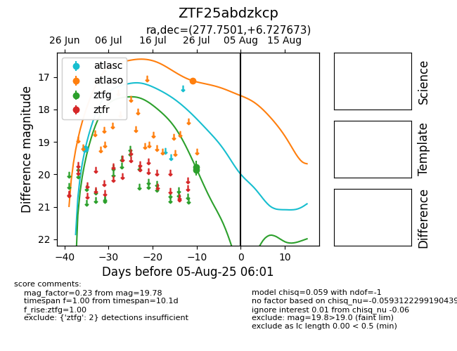

Target ZTF25abdzkcp at 2025-08-05 06:01, see:
FINK: fink-portal.org/ZTF25abdzkcp
Lasair: lasair-ztf.lsst.ac.uk/objects/ZTF25abdzkcp
ALeRCE: alerce.online/object/ZTF25abdzkcp
alt names
ZTF25abdzkcp (ztf,fink)
coordinates:
equatorial (ra, dec) = (277.7501,+6.72767)
galactic (l, b) = (36.6300,+7.59286)
photometry
last atlasc=19.21, atlaso=17.11, ztfg=19.78
1 atlasc, 1 atlaso, 2 ztfg detections
